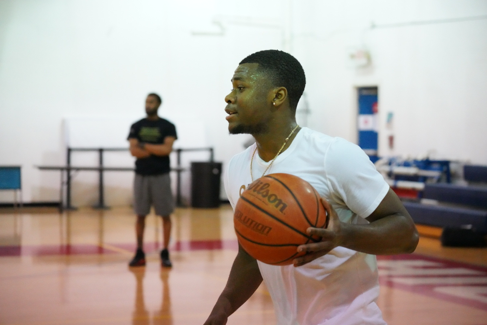

From High School Hooper to Pro Through Hard Work and Belief

------- Plano East --------- Brookhaven Basketball has always been more than a game to me. It has been a test of who I am when things are easy and who I am when they are not. Every weakness showed up on the court. Every bit of discipline showed up too. At Plano East Senior High School I experienced some of the most fun moments of my life. The bus rides, the locker room energy, the feeling of playing alongside my teammates made those years special. It was not always the best situation for me personally, but I learned how to make the most of my opportunities. When I got my chance, I made big plays. I scored when we needed a bucket. I created for others and showed flashes of what I could become. The one thing I was still building was confidence. I worked hard, but I was still learning how to fully believe in my game. That belief started growing at Brookhaven College. My freshman year I improved in every area. The game slowed down and my skill set expanded. I felt myself taking steps forward. My sophomore year was different. I struggled with focus and let distractions, especially relationships, pull my attention away from the level of discipline I needed. I was still very good. I could score. I could make plays. But I knew I could have been even better if I had treated basketball like a true profession every single day. That season taught me a powerful lesson. If you want to reach another level, you have to treat the work like a job. Show up locked in. Stay consistent. Put in extra hours when no one is watching. After Brookhaven, I had one offer from a school in Boston. It felt like the next chapter was ready to begin. Then COVID changed everything and the opportunity disappeared. For a moment, it felt like the door had closed. Instead, it redirected me. At my dad’s practice where he coached, I randomly met a coach who would later become my trainer. He coached on the girls side but saw something in my game. We began training consistently. Not just casual workouts but serious development. Skill sessions. Strength training. Conditioning. Film study. Every week I felt a shift happening. I became stronger and faster. I understood the game at a deeper level. Situations that once felt rushed became calm and clear. My confidence was no longer based on emotion. It was built on preparation. After months of training, my trainer told me something that stuck with me. He said I was good enough to try out for a professional team instead of going back to school. He believed in me before I fully believed in myself. So I took the leap. I went to an open tryout for the 7ers in The Basketball League. Every drill mattered. Every possession mattered. I played with focus, discipline, and trust in the work I had put in. I made the team. That moment meant more than just making a roster. It was proof that hard work and dedication pay off. It was proof that lessons learned through struggle can turn into strength. From Plano East Senior High School to Brookhaven College to the professional level, my journey has been about growth, accountability, and believing in the power of consistent effort. This is only the beginning.